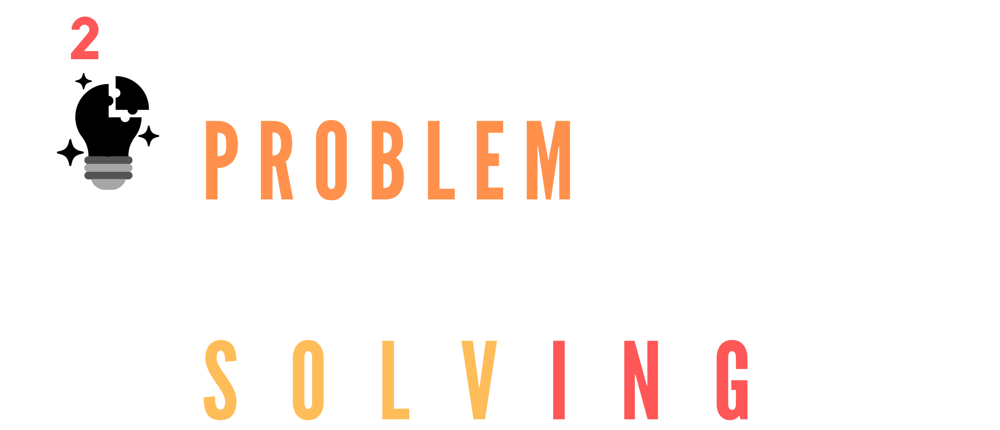

Dummies Guide: How to hone Your Managing skill
1. Take Initiative
The sense of urgency and taking the initiative of a task to directly manage and plan then delegate will help you hone your critical
thinking and managing ability. Hence, taking the initiative in circumstances triggers your alertness and awareness to effectively
delegate work tasks and grasp the whole situation upon effectively managing your team or work task,
so take initiative

2. Problem solving
When you encounter a problem, what do you do? As a great manager, it is likely to go unto deep thinking with analytical and critical
skills as the first step. Solving the problem is not just presenting the issue or analyzing the situation. Hence, it is likely to
derive a solution to the problem. What is the problem, what are the factors triggering the problem, what are the possible solutions
to the factors deriving the problem, and lastly
conclusion; what is the most effective way to counterattack the problem?
3. Goal setting
The intent of knowing the goal gives a spark of motivation. Goal setting is necessary to build your skeleton map toward the output.
Determining a goal helps you shape your plans and action to carry out the task effectively. A goal-driven person will be persistent
in his activity and even consistent if that certain individual is carrying a goal with time orientation.
Goal setting aligns with managing, organizing, and planning.
4. Seek Management Opportunity
Lastly, practice!! Seek out management opportunities where you can take the lead, take initiative, plan, and goal set. We all know
that repetition is the mother of skills. So keep enhancing your managerial skills through actively participating in group activities
and executing your managerial knowledge.
Managerial skills are co-aligned with planning, organizing, scheduling, goal setting, & solving problems, mastery of this field can
make you a more efficient managerial state or effective leader in your team.